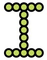

bingol, 2022-03-24
This week we did many important steps.
202203-AFL-Days directory in our computer.202203-AFL-Days directory in VSC.KidsCoding.html and run it in Chrome so that we played with "Celebrating 50 years of Kids Coding"circle-2.html.(Every student should do this part.)
Make sure that the directory structure in your disk is as given below.
202203-AFL-Days
|- Day-00
| |- KSC-VSC.md
| |- ...
|- Day-01
| |- circle-2.html
| |- ...
|- Day-02
|- ...Keep playing the game on https://www.google.com/doodles/celebrating-50-years-of-kids-coding?hl=en?.
Play path description game with your friends.
Search internet for "algorithmic thinking" and "computational thinking".
Identify functions, such as open file, that you used so far while using VSC. Add their key short cuts to KSC-VSC.md. Find reloac key short cut for "reloading" Chrome and add that to KSC-Chrome.md.
Make copies of circle-2.html and name them such as
circle-2-v1.html,
circle-2-v2.html, ....
let bigCircle = s.circle(160, 140, 100);...
let smallCircle = s.circle(90, 150, 70);Consider the lines given below.
fill: "#bada55",
stroke: "#000","#bada55" ve "#000" with any 6-character combination, such as "123456", "ddccff", selected from the set
{0, 1, 2, ..., 9, a, b, c, d, e, f}.(This part is for advanced students.)
Now you can control your circles on the screen.
You can write letters such as letter "I" below.

Similarly write letters "I", "L", "H" harflerini in files named as letter_I.html, letter_L.html, and letter_H.html.
Letters such as "A", "B", "O" are little bit more difficult to make but doable. Try.
Try to write your name using these letters.